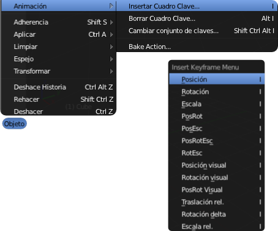

Regla tiempo-diseño
En el proceso de creación de keyframes hay una regla que no debemos olvidar para optimizar nuestra trabajo. Se trata de decidir primero el momento (fotograma) que vamos a convertir en keyframe y después definir todo aquello que necesitemos. Es lo que denominaremos regla tiempo-diseño.
Vamos con una animación realmente sencilla para ponerla en práctica.
La escena por defecto apararece en el fotograma 1. Además de la línea vertical verde del editor Línea de tiempo  disponemos de varios sitios más donde constatar este hecho.
disponemos de varios sitios más donde constatar este hecho.
El (1) del editor Vista 3D es puramente informativo mientras que el 1 del editor Línea de tiempo  es un campo editable que nos permite acceder y desplazarnos con precisión al fotograma que deseemos. Sabiendo esto vamos a proceder:
es un campo editable que nos permite acceder y desplazarnos con precisión al fotograma que deseemos. Sabiendo esto vamos a proceder:
- Con el cubo seleccionado hacemos Objeto/Animación/Insertar Cuadro Clave y en el menú que se despliega escogemos Posición (también hubiéramos podido usar la tecla "I" sobre el editor Vista 3D).

- Ya esta definda la localización y el diseño del fotograma 1.
- Ahora nos desplazamos en la Línea de tiempo
 hasta el fotograma 100 (primera parte de la regla tiempo-diseño)...
hasta el fotograma 100 (primera parte de la regla tiempo-diseño)...

- ...y buscamos una nueva localización para el cubo (segunda parte de la regla tiempo-diseño). En este caso denominamos "diseño" a definir la posición, pero puede haber otros muchos elementos a concretar.

- Repetimos la operación de insertar el keyframe de Posición.
Al poner en marcha la animación ("Alt_A") desde el fotograma 1 el cubo se desplaza.